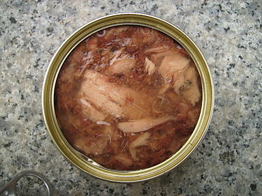
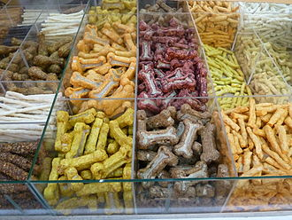
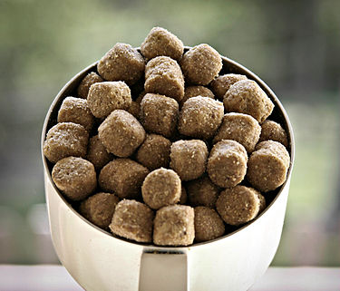

DOG FOOD NUTRITIONS
Quality, digestibility and energy density
There are a few key components to consider when evaluating dietary needs. These factors include the quality and digestibility of the protein provided in the diet, as well as the composition of the amino acids included, and finally the energy density provided in the diet. Diets containing proteins that are high in quality, composition, and digestibility require less of that protein to be present. The same can be said in regards to the energy density. In contrast, high-protein diets will provide excess protein content after meeting maintenance demands; this can therefore lead to the protein being utilized in fat and energy storage. This ultimately increases the risk for developing obesity and other health related issues. Higher protein in the diet helps reduce lean body mass loss, but will not lead to an increase in size of muscle unless paired with resistance exercises or anabolic steroids under maintenance conditions.

Types of diets
Raw
Raw feeding is the practice of feeding domestic dogs, cats and other animals a diet consisting primarily of uncooked meat, edible bones, and organs. The ingredients used to formulate raw diets can vary. Some pet owners choose to make homemade raw diets to feed their animals but commercial raw food diets are also available.
Frozen, or fresh-prepared, meals come in raw or cooked form, some of which is made with ingredients that are inspected, approved, and certified by the USDA for human consumption, but formulated for pets. Part of this growing trend is the commercialization of home-made dog food for pet owners who want the same quality, but do not have the time or expertise to make it themselves. The advantage is forgoing the processing stage that traditional dog food undergoes. This causes less destruction of its nutritional integrity.

Low-protein
According to The Association of American Feed Control Officials (AAFCO) nutrient guideline for cats and dogs, the minimum protein requirement for dogs during adult maintenance is 18% on a dry matter (DM) basis. Other parts of the world would have a guideline similar to AAFCO. The European Pet Food Federation (FEDIAF) also stated a minimum of 18%. AAFCO only provided a minimum, but majority of the diets found on the market contain a protein level exceeding the minimum. Some diets have a protein level lower than others (such as 18-20%). These low-protein diets would not be seen with growth and reproductive life stages because of their higher demand for protein, as such, these diets are for dogs meeting maintenance levels. They can be purchased, such as vegetarian, vegan, weight control, and senior diets. Furthermore, this protein requirement varies from species to species.
